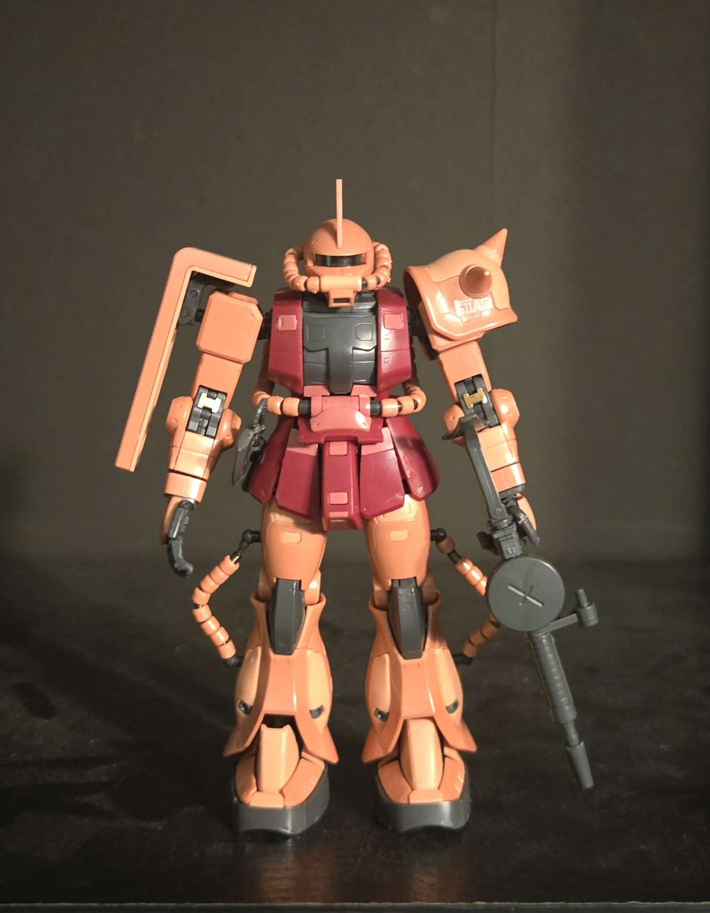

RG MS-06S Char's Zaku II
Tools I Used on The Build:
- GodHand Ultimate Nipper 5.0
- Bauer 800 Grit Sandpaper
- Bauer 1200 Grit Sandpaper
- Exacto Knife
- Tweezers
- Polishing Cloth
Thoughts:
This is the first Real Grade Gundam model kit I built! I invested in a better nipper because the one I was previously Using broke due to be not taking care of it properly. It was a very fun and complex build, which is normal for anything above Real Grade model kits.
Completed Parts:
- Head Piece
- Torso
- Left Arm
- Right Arm
- Waist
- Left Leg
- Right Leg
- Sword
- Shield
Click Model Name to go Back to Gallery!
